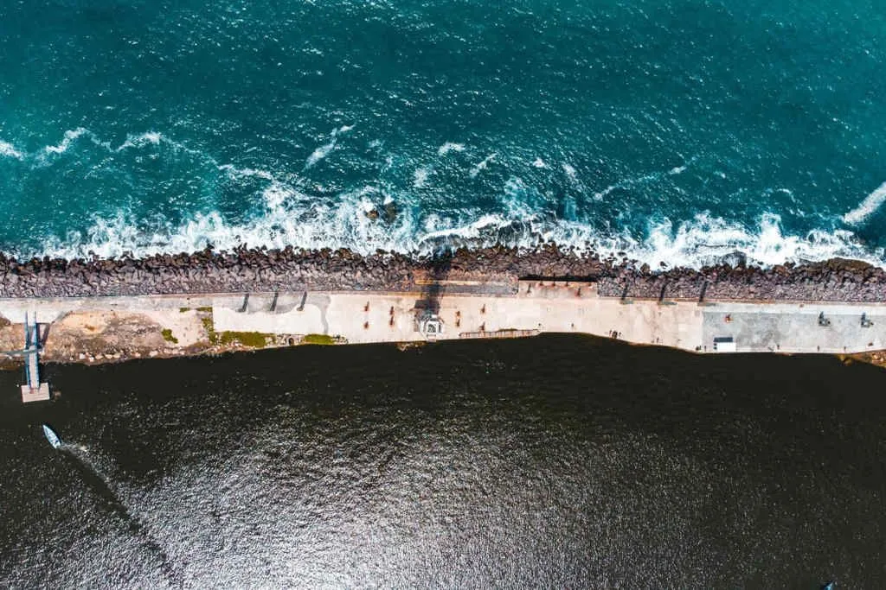

Parque de Esculturas de Francisco Brennand
O Parque de Esculturas de Francisco Brennand é um dos lugares turísticos em Recife que também chama atenção: um conjunto de obras do artista plástico pernambucano Francisco Brennand, instalado em um recife artificial na orla do Marco Zero. O parque tem como destaque a Coluna de Cristal, uma escultura de 32 metros de altura que simboliza o marco dos 500 anos do descobrimento do Brasil. O parque pode ser acessado por meio de um passeio de catamarã pelo rio Capibaribe ou de carro, pelo bairro de Brasília Teimosa.
- Outros pontos turisticos de Recife
- Voltar para a página inicial